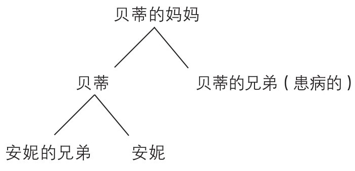

我们会根据情景使用不同方式来对概率进行评定或者诠释。但是，就像大卫·汉德(David Hand)在他的《牛津通识课：统计》(Statistics: A Very Short Introduction)中写的那样，“……微积分是一样的”，换言之，概率的操纵方式是不变的。
你头脑中要牢记这个学科的中心思想：加法和乘法定理、独立性、将客观概率和频率联系起来的大数定律、在将随机数求和时候使用的高斯分布、其他的一些经常出现的分布函数、反映总体情况时有用的平均值和方差。我们可能不指望我们对相关概率知道得像前几章那样精确，但是一个对于问题大致正确的回答对于作出合适的决定有良好的指导意义。就像统计学家乔治·博克斯(George Box)所说的那样，“所有的模型都不是完全正确的，但是有一些是很有用的”。
下两章中举例说明了概率的应用，这些应用以章节标题粗略地分了组。
布朗运动和随机游走
1827年，植物学家罗伯特·布朗(Robert Brown)观察到，在液体中悬浮的花粉粒子似乎随机地在动来动去。将近80年之后，阿尔伯特·爱因斯坦(Albert Einstein)对其给出了一个解释：花粉粒子被液体中的分子持续地撞击。这种运动当然是发生在三维空间中的，但是为了创建一个令人满意的模型，我们首先思考在一条直线上的运动。
假设每一步运动都是具有固定长度的，有时向左有时向右，每一次运动都是独立的。这个概念就叫作随机游走 (Random Walk)。在许多次跳跃之后的位置只取决于向两个方向的跳跃次数的差值；从起始点计算的距离平均值和方差与进行跳跃的次数成正比。
下面进行一个微妙的计算：在一个固定的时间段中，增加 跳跃的频率，并且降低 每一次跳跃的距离。在这两种因素平衡的情况下，极限情况就是连续运动，运动经过的随机距离遵循高斯分布(依据中心极限定理)，这个分布的平均值和方差都与时间段长度成正比。如果向左和向右的运动是等可能的，平均值就会是0。
爱因斯坦对于布朗的观察作出的解释，是粒子在三维空间中运动，基于上文给出的原因，在每一个方向上的运动都遵循高斯分布。他对原子和分子的行为作出了预测，这些预测推动了一些实验，这些实验消除了有关原子和分子存在的所有悬而未决的问题。
术语“布朗运动 (Brownian motion)”本应该专指在液体中的粒子的实际运动，但是它也被用于指代描述这种运动的数学模型。
随机数
“随机数”这个词指代的是下列两种想法之一。第一，就像理想情况下的色子游戏或者轮盘赌游戏，一个数从一个有限的列表中被取出来，所有的这些数都是等可能的。第二，就像从一个随机的一点折断一根木棍一样，一个点被从一个连续的区间中取出来，没有任何一小段是比其他的小段更容易被取点的。取出这样的随机数中的一段长序列的方法具有广泛的应用，序列中的每一个值与其他的值都是相互独立的，下一部分会举例说明这一点。
在1955年，一本名为《一百万个随机数》(One Million Random Digits)出版了。它的确就是它的书名描述的那样：一页又一页的0到9的数字，被分块以便阅读，但是连续的数字是完全不可预测的——无论前面的数字是什么，你都会有1/10的概率猜对下一个。如今，现代计算机已经有内置的软件来获取与之相同的结果。输入一个初始值——随机数种子 (seed)，一个确定的数学公式就会给出下一个值，它被当作新的随机数种子，以此类推。这个过程中毫无随机意义可言，并且如果每一次都是用相同的随机数种子，就保证会生成完全相同的数列。但是，基于数学公式的巧妙选择，生成的序列成了统计检验中的基础，而且对于任何目的和用途来说，它看起来 就好像是随机的一样。我们用伪随机数列 (pseudo-random sequence)这个术语来称呼它。
无论在这个过程中有多么小心，一定会有一些方法中的谬误将会引起对随机数应用场景的担心。但是依赖大量受人尊敬的科学家的经验，我还是会认为我电脑中根据需求产生的随机数是可以接受的。(显而易见的内部人员欺诈的风险导致了这些方法不能应用于彩票摇奖，或者英国溢价债券。)
蒙特卡罗方法
连续37次转动标准的欧洲轮盘赌轮会得到多少不同的数字？理论上讲，这个个数会是1~37之间的任何数，但是那些极端的值会十分罕见，最常出现的不同数字的个数是多少？
这个问题第一次呈现在我面前的时候，我没有立即看出有什么简单的方法能解决它。转动赌轮37次会得到3737 (一个有59位的十进制数)种可能的结果，而且当你试图罗列，例如有28个不同数字的结果的时候，你将会很快失去热情。一个更加吸引人的方法是进行一个所谓的蒙特卡罗模拟 (Monte Carlo simulation)。
在这里，计算机产生的随机数流将会用来模拟37次转动赌轮的结果，之后计算机将会计算有多少不同的数字出现了。这个过程将会重复100万次，结果是24个不同数字出现了203 739次，而23个数字只出现了199 262次。最接近的竞争对手是22或者25个数字，都出现了不到160 000次。大数定律告诉我们不同的结果出现的频率将会稳定在它们的各自的概率，而且这些数字的确本质上证实了这件事：最有可能的结果就是有24个不同的结果会出现，概率刚刚超过20%。
几天后，我羞愧于当时没能找到一种标准的方法来解决这个问题!我能够计算出对于任意的X，转37次赌轮得到X个不同数字的精确的概率，以证明上面的结论是正确的。但是这不会让应用于这类问题的模拟失去效力——快速而粗糙的结果也会是很有用的。的确，模拟给出的结果与精确计算得到的结果保持一致这个事实，增加了我对计算机随机数生成器按预想运行的信任。
一个更加严肃的蒙特卡罗方法的应用是在聚合物化学(polymer chemistry)中。一个分子是由大量的原子被随机扭曲的长链连接构成的。原子们只能出现在均匀分割的晶格中，并且关键的一点是，没有两个原子能够出现在同一个位置。从分子的一端到另一端的距离可能有多远？
我们可以认为原子被放置在一个醉汉走过的位置，这个醉汉摇摇晃晃地随机经过三维空间中的晶格，但是因为某些原因不能在同一个位置经过两次。没有不能重复经过同一个位置的这个要求，数学家们可以给出很好的解答，但是这个限制条件似乎将问题复杂化到了理论无法解决的地步。然而，哪怕一个不专业的计算机程序员也可以写出一个对这个复杂、曲折的链的合理的模拟，而且在100万、1000万，甚至10亿次重复之后，得到一个所需的精确答案。(回忆棣莫弗的工作，精确度与模拟次数的算数平方根 成正比。)
假设你想要估计一片不规则形状叶片的面积。画一个包围了这片叶子的矩形框，然后模拟大量的随机分散到矩形内部的点的位置。你的估计就是用矩形区域的总面积乘以落在叶子边界内部的点的占比。
作为最后一个举例介绍的应用，假设保罗(Paul)想要建一个新的加油站。如果他安装4个加油泵，这是最小的可行的泵数，就会有至多8辆车的等待区；每个额外的泵减少2个等待区，所以如果他安装了最多的8个泵，就没有等待区了。为了计算多少个泵会让他的收益最大，他可以进行对安装了4、5、6、7或者8个泵的情况的模拟。
他应该知道潜在的顾客前来加油的比例和一辆车停在泵旁边加油的时间的分布，还有安装费用、运行费用与边际收益。他也应该考虑到如果没有加油泵空闲，或者队伍过长时，一个潜在的顾客直接开过去不来加油的概率。找到或者估计所有这些数字都是相对简单的，而且用计算机进行模拟会比在几个月中以不同的泵数进行实地试验便宜很多 。因为他可以每一次都使用相同的随机数种子，他就可以在精确相同的情况下运行所有的模拟，对比不同的估计从而增加收益。
为什么叫“蒙特卡罗”呢？除了随机数和赌场游戏之间的明显的联系，这个名字其实原本用来指代军事领域对这些方法的应用，这其中就包括了早期的核弹的研制 [1] 。
电码中的错误
摩尔斯电码(Morse code)告诉我们如何只用两种符号，比如说0和1来传输消息。但是其中一些符号也许会被损坏，以至于原本发出的0接收到的时候就变成了1，反之亦然。甚至在较低的错误率下，接收到的消息也会与发送的消息有天壤之别。我们如何应对这种情况？
假设每个传送的符号都有相互独立的较小概率被损坏。我们可以重复发送这些符号，但是稍微一想就会发现，发送00和11而不是0和1根本不能解决问题：如果01或者10到达，确认到底传输的是00还是11就全靠猜测。我们会猜对一半，但是重复发送符号意味着我们可以预见其中会产生两倍的错误，所以两种因素大部分相互抵消了。但是我们考虑一下传输000和111而不是0或者1。
采用“少数服从多数”的原则来进行解码，所有的{000， 100， 010， 001}都被理解为0，其他4种可能的情况被理解为1。如果只有1%的发送的符号被损坏了，那么当000被发送出去，利用二项分布告诉我们有99.97%的概率上述的4种序列被接收到。这意味着错误率从1%降到了0.03%，降低了超过30倍。如果每个数字重复5次，我们可以得到更好的结果，但是消息变长会增大开支。最佳选择将会依赖内在的错误率和传输的速度。
羊膜穿刺术
准父母(同时也是统计学家)樊娟娟(Juanjuan Fan)和理查德·莱文(Richard Levine)在考虑樊娟娟要不要接受羊膜穿刺术(amniocentesis)——可以检测她的胎儿是否患有唐氏综合征 [2] (Down’s Syndrome)。他们的经历可以作为其他类似情况的模板。
基于樊娟娟的年龄和简单的血液检查，我们可以给出胎儿患有唐氏综合征的概率为1/80；超声图像检查的结果是令人满意的，借助贝叶斯公式计算后，得到的患病概率减小到了1/120。羊膜穿刺术是一个侵入性的手术——一根中空的针刺入腹腔抽取羊水样本；如果作为唐氏综合征特征的21号染色体被检测出多余复制，就一定能够确诊，但是羊膜穿刺术这种检测有一定的风险导致流产，在这个情境中风险概率估计是1/200。如果确诊胎儿为唐氏综合征后，父母们一定会选择流产。他们应该接受这个检测吗？
樊娟娟和莱文通过使期望效用最大化的逻辑分析过程得出他们的决定。可能出现的最坏结果是没有患唐氏综合征的胎儿流产，其效用赋值为0；最好的结果，是出生的胎儿不患有唐氏综合征，其效用赋值为单位1。不进行羊膜穿刺术，生下来患有唐氏综合征的孩子，赋值效用x；进行了检测，的确检测出了唐氏综合征的效用y应该大一些。(最后一个情况中检测导致的流产就无关紧要了，因为无论如何胎儿都会被流产。)
他们计算出了进行检测和不进行检测的期望效用。如果第一个值超过第二个，就应该进行检测，在这种情况下，就是要求y大于(119/200) + x，粗略地要求y大于0.6 + x。
如果樊娟娟和莱文认为确诊唐氏综合征之后进行流产的效用小于0.6，那么进行检测就会毫无意义。他们给生下尽管患有唐氏综合征的小孩的效用x赋值越高，那么y的阈值就会越高。如果这个效用x超过0.4，那么他们就一定不会接受检测。
选择x和y的合适的值需要一定的思考，而且如果基本的参数——接受检测的流产概率为1/200，不接受检测生下唐氏综合征婴儿的概率1/120——发生变换，最后计算得到的判断准则就会变化(参见附录)。简单地讲，如果胎儿患有唐氏综合征的概率小于意外流产的概率，接受检测就不合理了。真的是这样吗？
樊娟娟和莱文讨论了他们面临的难题，他们赞同的效用值的选择让他们决定接受检测。结果是美好的：没有多余的染色体，也没有发生流产。
血友病
血友病(haemophilia)是一系列伤口产生后无法凝血的疾病的统称。控制凝血的基因位于X染色体上，这个基因异常的概率小于1/5000。因为女性有两个X染色体，所以她们只会在两个染色体上的基因均异常的时候才会发病，发病概率小于1/25 000 000，但是男性只有1个X染色体(和一个Y染色体)，所以几乎所有的病例均为男性。
如果男性患有血友病，这在他做父亲之前就已经确定了，但是一个女性有可能有一个正常的X染色体和一个携带异常凝血基因的X染色体。这些女性被称为携带者，而且她把异常基因传递给孩子的概率是50%。女儿继承了异常基因会成为携带者，儿子继承了异常基因就会成为血友病患者。维多利亚女王(Queen Victoria)肯定是一个携带者，因为她的儿子利奥波德(Leopold)是一个血友病患者，而她的5个女儿中至少2个是携带者，她的另外3个儿子没有患这种病。
假设贝蒂(Betty)有一个患有血友病的兄弟，贝蒂有7个孩子，其中包括安妮(Anne)。那么安妮是携带者的概率是多少？
为了解答这个问题，得到贝蒂是携带者的概率就足够了，安妮的患病概率一定是这个值的一半。因为贝蒂的兄弟是血友病患者，所以贝蒂的妈妈是携带者。但就这个信息而言，贝蒂是携带者的概率是50%。而且如果安妮的任意 一个兄弟患有这种疾病，贝蒂就一定是携带者，所以我们来看安妮的所有兄弟都正常的情况。
贝叶斯公式非常适合于这种情况。设“有罪”意味着贝蒂是携带者，因为有罪的先验概率是50%，先验赔率就是单位1。如果贝蒂是无罪的(不是携带者)，证据(所有的兄弟都是健康的)的概率就直接是100%。但是如果贝蒂是有罪的，每个安妮的兄弟都独立地有50%的概率避免错误的基因，所以每个健康的兄弟都会让似然比减半。将后验赔率转换为后验概率，贝蒂是携带者的概率就相继是1/3、1/5、1/9、1/17……，对应于她有1、2、3、4……个全部健康的兄弟。

图10 家庭成员关系
作为消遣你可以思考一下，假设安妮同时有姐妹，她们其中一些有儿子，而且安妮的这些侄子们都不患病。这将如何影响安妮是携带者的概率？将你的答案与附录中的相对照。
流行病学
术语群体免疫 (herd immunity)表示一个事实：如果足够多的人免疫了，那么即使传染病进入社群，流行病也不会发生。因此即使那些没有接种疫苗的人也非常不可能感染疾病。为什么是这样的，以及我们如何知道“足够多”意味着多少？
通常来说，那些感染者将会把疾病传染给其他人，但是那些痊愈了的就会获得对这种传染病的免疫。所以我们把人们分类成易感人群、受感染人群和去除人群，最后一个指的是那些接受疫苗注射、感染后康复、物理隔离或者已经死亡的人。将这四种情况归为同一类看似有一些生硬，但残酷的事实是，仅从流行病传播的角度，这四种情况是完全等价的。
为了考察流行病是如何发展的，设S为易感个体数，I为受感染个体数。这两个数字的乘积给出了受感染个体与易感个体可能接触的总数。城市中拥挤的全体居民要比同样多的农村中分散的全体居民更频繁密切地接触，而一个易感个体在一次接触中被感染的概率依赖于疾病的传染性。总的来说，在任意很小的时间段内，一些易感个体被感染的概率形如β×S×I，其中β同时依赖于疾病的传染性和人们混合的情况。
在这个很短的时间段内，任何一个受感染个体可能会被移入去除人群中。因此受感染人群减少一个成员的概率将会与受感染的人数成正比，所以我们采用γ×I的形式，其中γ依赖于感染被治愈、隔离或者致死的速度。
我们已经分别得到了受感染人数上升和下降的概率。它们(β×S×I和γ×I)之间的平衡将决定流行病是否会发生。这十分类似赌博。如果游戏局势对你不利，每一个赌局都会减少而不是增加你的资金。你的资金遵循着随机游走的规律，不可避免地漂移到0。但是如果游戏局势对你有利，例如坏运气在游戏初期没让你破产，此时的随机游走就会使你从所有输钱的趋势中抽离出来，使你的资金远远超过0。要赢得大额赌金的话，游戏对你有利这个条件是必要的，但不是充分的。
在这个流行病的情境中，这就意味着流行病(等同于大笔收益)只会出现在受感染者数目变化是增加远多于减少时。用符号描述，就是β×S×I远大于γ×I，这也等同于要求易感个体数S超过比例γ/β，这个比例被称为易感个体数的阈值(threshold)。这就是我们一直寻找的：即使疾病传入人群中，流行病也只会发生在易感个体数超过这个阈值的情况下。
威廉·科尔马克(William Kermack)和安德森·迈肯德里克(Anderson McKendrick)在1927年发表了这一结果。将易感人群总数控制在这个阈值以下可以阻止流行病的发生，两种明显不同的方法能达到这一效果。第一，接种疫苗来减少易感个体数；第二，找到增大阈值的方法。这个阈值是一个比值，分子增加的时候，阈值就会增加——加快治愈的速度，或者更迅速地将人们隔离——或者让分母减小——也许可以降低疾病的传染性，或者确保人们更少地相互接触，这可以通过暂时关闭学校或者推迟有大批人群聚集的运动赛事进行。我们还可以评估这些对策的收益，以便决定采取什么策略。
相同的原理对处理动物中的流行病也是奏效的。阻止牛群中口蹄疫暴发的第一步就是限制牛群的活动，这是通过降低分母来提升阈值。与此同时也会伴随着大量屠宰(在人类中不可行!)，这样不仅降低了易感个体，也会提升阈值的分子。
上述分析也揭示了为什么我们更希望两次儿童流行病暴发的间隔时间是相对有规律可循的。在一次流行病将易感个体数量减少到阈值以下之后，没有足够免疫的新生儿会逐渐将易感个体数提升到阈值以上，这就为下一次流行病的暴发创造了条件。两次流行病暴发的间隔越长，易感人数就会越多，暴发就会越严重。
了解概率知识可能不会治愈疾病，但可以缓和疾病的影响。
批量测试
一支军队想要确定1000名潜在的新兵中有哪些是对某种疾病易感从而不适宜服役的，可以进行血液检测，但每次检测花费50英镑。用少于50 000英镑可以完成这项工作吗？
如果易感人群只占相当小的比例，那么答案就是肯定的。选取数字K，收集K名新兵的血液混成一个样本；然后测试这个样本。如果结果是阴性的，那么所有的这些抽血了的新兵就都是健康的，不需要进一步的检测了；否则(检出阳性)这组人里面至少有一个是阳性，所以我们再进行K次检测，每个人进行一次，来确定到底谁是阳性。如果我们足够幸运的话，一次检测就够用了，但我们有可能需要进行K + 1次检测。我们希望检测次数比每个新兵单独检测的次数低。
对一次收集多少个人的样本是最佳选择依赖于检测到阳性的概率。假设这个概率是1%。那么如果我们一次混合10个样本，那么它是一个阳性样本的概率大约是10%，同时这个样本为阴性的概率是90%。所以90%的情况中我们只需要1次检测，但是10%的情况我们需要11次检测。这致使每次需要平均2次检测。混合10个样本将会把检测10名新兵的花费从500英镑减少到100英镑。如果我们将这1000个士兵每组10人地分成100组，然后混合他们的血液样本，我们预期将会节省最初估计花费50 000英镑的80%。
更加精细的计算显示，如果检测出阳性的概率的确是1%，将每组按11人批量检测会比10人稍微好一点，但是其中的差别很小。但是批量检测分组大小的最佳选择对于检测出阳性的概率是非常敏感的。如果我们预期2%的新兵会被检测出阳性，那么每组8人的时候花费最少；在预期的阳性率为5%的时候，每组5人花费最少；而在预期的阳性率为10%的时候，每组4人最合适。(又一次地，使用二项分布可以得到这些结果。)
在第二次世界大战中，这个朴素的想法为美国节省了最初预期检测花费的80%。
航班超额预订
即使必须对那些支付过机票但被赶下飞机的乘客进行补偿，航空公司还是会常规地售出比飞机载客量更多的机票。其中的原因涉及简单的经济学：航空公司完成一次航班的开销几乎不受乘客数目影响，但是每个空座位都会使收益减少。如果预期不是所有订了某次特定航班机票的乘客都会乘机，那么航空公司如何计算出最合适的超额预订数量？
假设飞机上有100个座位，每个座位的费用是100英镑，但是如果因飞机上位置已满而拒绝一名乘客登机需要赔偿其200英镑。航空公司需要对一名预订了机票的乘客实际乘机的概率进行较好的估计。对于前往旅游目的地的包机来说，这个概率将会接近于100%，但是对于那些旅行计划中有更多可变性的乘客来说这个概率会比较低。有关频率的数据将会帮助航空公司估计这些概率。
假定每个预订机票的乘客都独立地有80%的概率会最终登机。如果售出120张票，总的收益就是12 000英镑，而且，虽然平均只有96名乘客会登机，但是有一定的概率，大概15%，超过100名乘客露面，至少有一名乘客留在地面。(这些数字再一次由二项分布给出。)这种情况下航空公司因为超额预订而需支付的赔偿平均为80英镑。多售出5张机票将提升500英镑收益，而平均全部赔偿只提升了275英镑，所以这个策略预计会收益更多。平均收益最多的是售出128张票——比售出125张更多，额外的收益300英镑也已经比平均赔偿295英镑更多了，同时售出129张票会比这稍差一点。
假设某些乘客比另一些乘客更有可能实际登机是更现实的，而且一组一起订票的乘客要么会全部出现，要么全部不出现。这些细节会被容纳到模型中，航空公司会继续售出座位，直到多售出一个座位预计的赔偿超过了额外收益的增加。
排队
概率发展得最好的应用之一是在各种排队中。最初的需求源自试图理解电话线路中的阻塞现象——为表扬丹麦电话工程师艾格纳·埃朗(Agner Erlang)的工作，电话通信流量大小以他的名字命名。排队论为1948年和1949年的柏林空运 [3] (The Berlin Airlift)的胜利作出了贡献，对排队的系统性的学习在接下来的20年中蓬勃发展。
大卫·肯德尔(David Kendall)引入了一种记号，形如A/B/n，现在普遍作为在顾客逐个地加入队列的时候，对于队列的描述方法。第一个组成部分A指的是两个顾客到达的间隔时间的分布，B指的是为1个顾客提供服务所需时间的分布，n是服务员的数量。
例如，在表达式D/D/3中，“D”是确定性(deterministic)的简写，它意味着完全没有随机性。顾客到达队列末尾的间隔时间是恒定的，所有的服务时间都恰好相等，并且有3名服务员。这种队列在概率的领域中可能并不让人感兴趣，因为其中没有变化性。但若假设有大量的顾客，在很短的时间间隔内他们中的每一个都有很小的概率加入队列，所以顾客以一个总体来说平均的时间间隔加入队列，但是顺序完全随机。这种情况下使用符号M，为了纪念安德雷·马尔可夫，所以M/D/2意味着顾客们随机地到达并且选取两个服务员中的一个，这两个服务员完成工作花费的时间是固定的。
我们想知道队列是如何运作的。最主要的问题是顾客们将会等多久，服务员多么频繁地无所事事，还有为了改善情况我们可以做什么？“服务员”可能是重症监护病床，同时“顾客”就是等待看护的患者。
如果平均每5分钟有一个顾客到来，一共有3名服务员，那么除非平均服务时间少于15分钟，否则就将会产生一个无限长的队列，总体运营就无法维持了。所以我们必须假设考虑到了服务员数量之后，平均服务时间小于顾客加入队列的时间间隔。这两个平均时间的比值被称为流量强度 (traffic intensity)，是一个介于0和单位1之间的数值。
在理想情况中，顾客排队时间比较短而且服务员将会一直工作。但是这两种要求正好是矛盾的。以简单的情况为例，有一个服务员而且顾客随机到达。如果流量强度是0.9，计算显示我们预计也许平均有5名顾客在等待，在10%的时间中队伍中没有人。如果流量强度增加到0.98，服务员将会只在2%的时间内空闲，但是平均队伍长度将会升高到25。大多数的顾客将会认为这是个比较差的安排。除非服务员们有更多的“空闲时间”，否则顾客们将会生气或离开放弃这里的服务，或者又生气又离开。
队列的运作不只是依赖于流量强度。在其他条件相同的情况下，服务时间的可变性越强，预期队列将会越长。在只有几个服务员的情况下，顾客加入唯一的一条队伍之后分配给6个服务员(例如火车站)，与顾客可以选择加入某一条队伍之后等待(例如超市)是不一样的。在某些情况下(例如叫救护车)某些顾客可能会有更高的优先级。许多的队伍遵循着“先到者先服务”的规则，但是在不易腐烂的货物存放在架子上等待使用时，可能会遵循“后到者先服务”的规则。某些队伍会汇入其他队伍，服务员们工作速度不同，一群顾客可能会同时到来。明察秋毫的排队论理论家们可以解答几乎所有你能想到的实用模型中的核心问题。
[1] 20世纪40年代，科学家冯·诺伊曼(John von Neumann)与斯塔尼斯拉夫·乌拉姆(Stanislaw Marcin Ulam)等人于美国洛斯阿拉莫斯国家实验室(Los Alamos National Laboratory)为核武器计划工作时，发明了蒙特卡罗方法，此方法的名称来源于乌拉姆的叔叔经常光顾的位于摩纳哥的蒙特卡罗赌场。
[2] 又称21-三体综合征、先天愚型，是一种因为21号染色体的三体现象造成的遗传疾病。
[3] 英美等国为解除冷战初期苏联对西柏林的物资封锁而展开的空运行动。